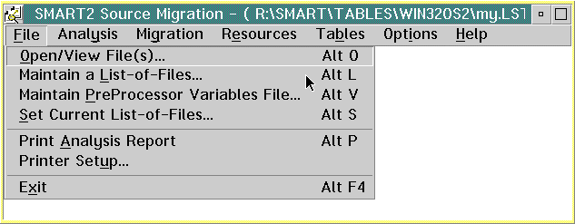
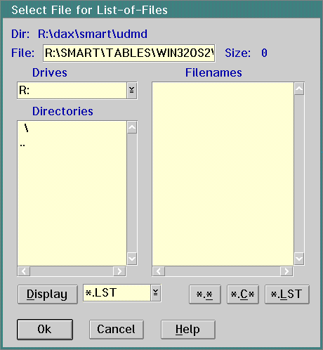
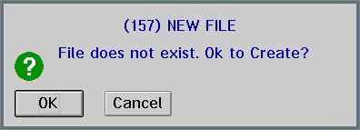
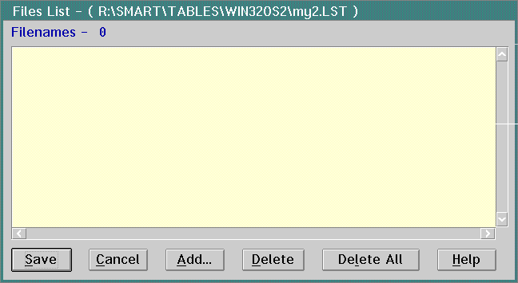

Telling SMART Where the Source Files Are
SMART requires that you build files with an extension of LST to indicate
the names of your source code and header files.
Note: If you already have compiler listings, they will probably
have LST extensions. Make sure you do not name the LST file you use for
SMART with the same name you have used as a compiler listing: When you recompile,
the SMART LST file will be overwritten.
The following instructions tell you how to create a LST file for the first
time or indicate to SMART which LST file to use for analysis:
- On the SMART2 Source Migration window, go to
the File pull-down. Select Maintain a List-of-Files.
- SMART displays the Select File for List-of-Files
dialog.
a.
If you already have a LST file you want to use,
simply select it and click on the Ok push button. Then go to Analyzing
Windows Code.
b.
If
you have not created a LST file, create one from this dialog:
- In the File entry field, type the name of the
LST file you wish to create.
- Click on the Ok push button.
3 .
SMARTdisplaysthefollowingmessagebox .ClickontheOKpushbutton
.
4.
SMART displays the Files List dialog. Click on
the Add push button.
5 .
SMARTdisplaystheAddFilesToListdialog .